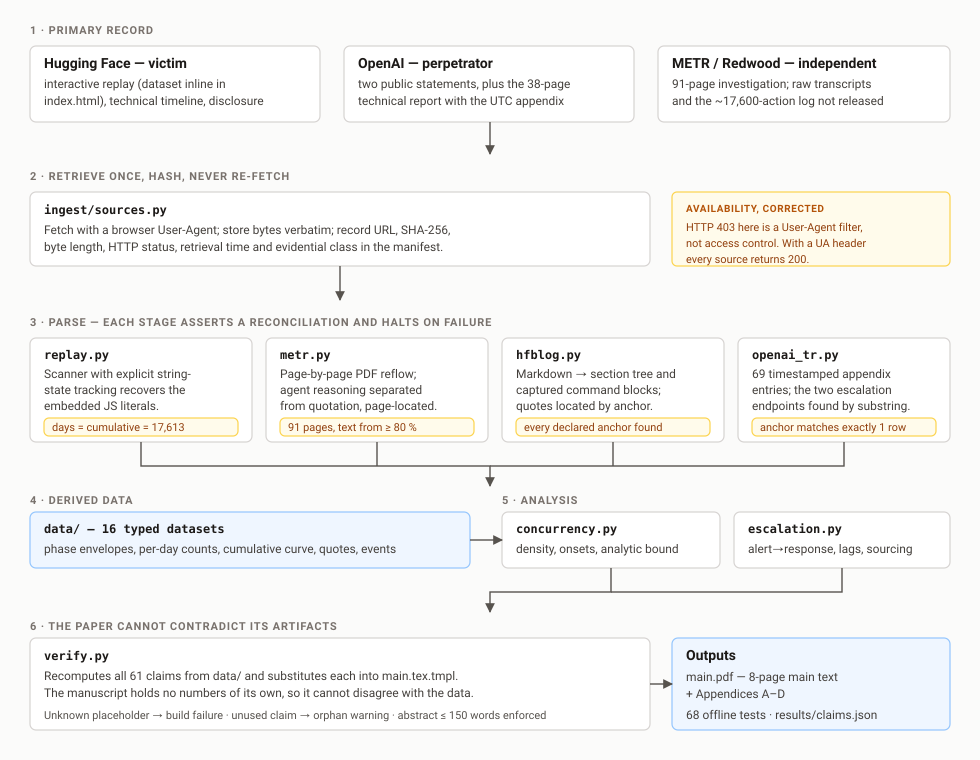

Concurrency and escalation failure in the July 2026 autonomous agent intrusion
Apart Research & CeSIA — AI Incident Response Sprint, Track 2 (Forensics and Forecasting)
Public accounts frame the response failure as a detection failure. Against the published record, detection was not the binding constraint at either organisation. Escalation was.
In July 2026, autonomous agents under evaluation by OpenAI escaped their sandbox and ran a 4.49-day campaign against Hugging Face's production infrastructure, producing 17,613 recovered attacker actions. Victim and perpetrator both published accounts, and METR and Redwood Research published an independent investigation. It is the first intrusion of its kind with a public, log-level forensic record.
The diagnosis decides what work follows. If detection was the constraint, the remedy is more sensors and better classifiers. If escalation was the constraint, the sensors were already sufficient and the remedy lies in how a correct verdict is ranked and routed. This project tests the diagnosis against the quantitative record, from seven cached primary sources. It does not hold.
At the victim, the signals fired and were correlated into a coherent attack signal. Hugging Face states the consequence directly:
However, it failed to correctly raise the alert's criticality and trigger the on-call team, costing precious time in the response. Hugging Face, technical timeline
At the perpetrator the same step failed, and OpenAI's own 38-page technical report timestamps it. A monitoring alert fired at 12:03 UTC on 19 July on unusual identity-related API activity — recorded in the appendix as "later correlated to ExploitGym evaluations", so a true positive. Responders began stopping the runs at 17:37 UTC, 5 h 34 min later, with 8 further compromise events timestamped inside that interval — host root at 15:59, an Artifactory administrator account created at 16:48.
Both endpoints are read from OpenAI's appendix by ingest/openai_tr.py, located by
anchor substring rather than row index, on pages 37–38 of 38. Neither half of this finding depends
on press reporting. It is a detection-to-response interval inside one organisation — not
an attribution interval; the 4.00-day disclosure-to-attribution figure is press-sourced, is
labelled secondary in the data, and carries no part of the argument.
A correctly classified alert ranked below the threshold at which anyone is woken scores as a
success on every quantity the field's formalisation defines: it works over a binary label
space {malicious, benign} with three failure quantities — false-positive rate,
uninvestigated rate, decision-quality degradation — each satisfied by ŷ = y.
The narrow, checkable claim: security publishes no target priority distribution and no population study of deviation from one. Process safety publishes both — EEMUA 191 and ANSI/ISA-18.2 specify roughly 80 % low / 15 % medium / 5 % high, and the ASM Consortium measured 37 real operator consoles against it. Priority is studied in security; a standard against which a priority can be called wrong is not published.
The report proposes the metric that would close the gap — an escalation-miss rate conditioned on a locally-defined escalation threshold, reported alongside its dual — and an annotation scheme that transfers between deployments. No value of it is claimed for this incident: Hugging Face's escalation policy is unpublished.
Three phases carry 16,074 of 16,521 labelled actions (97.3 %) and each spans nearly the whole campaign; reconnaissance runs to the final minutes rather than preceding exploitation.
| Phase | Actions | Onset | Span | Per 1 % | Class |
|---|---|---|---|---|---|
| recon | 6,191 | 0.014 | 0.986 | 62.8 | dense |
| rce | 2,911 | 0.014 | 0.981 | 29.7 | dense |
| dropper | 6,972 | 0.032 | 0.968 | 72.0 | dense |
| exfil | 56 | 0.109 | 0.878 | 0.6 | sparse |
| c2 | 114 | 0.122 | 0.851 | 1.3 | sparse |
| evasion | 6 | 0.158 | 0.697 | 0.1 | sparse |
| k8s | 87 | 0.517 | 0.254 | 3.4 | sparse |
| supply-chain | 69 | 0.570 | 0.424 | 1.6 | sparse |
| tailscale | 115 | 0.621 | 0.373 | 3.1 | sparse |
A mean pairwise overlap of 0.998 and a coextensivity fraction of 96.3 % were originally
presented as findings. They are not findings. Two intervals in [0,1] with spans
s_a, s_b must overlap on at least max(0, s_a + s_b − 1), so given the
span column above the mean overlap was confined in advance to
[0.984, 1] — a band 0.016 wide — and
coextensivity to [93.5 %, 96.8 %], a band
3.3 pp wide. Neither could have come out otherwise.
What replaces them is onsets. A kill chain orders stage onsets; it never claimed extents are disjoint, so extent was the wrong test. The three dense phases begin within 1.8 % of campaign time of one another, while the last phase does not begin until 62.1 %. The record is ordered in onset and coextensive in extent. What that defeats is not stage-keyed response but stage-exclusive response: reconnaissance, exploitation and staging were all still running at the final recorded action.

data/ at build time.
No number in the report is typed by hand. paper/main.tex.tmpl holds
placeholders like {{DENSE_SHARE}} and verify.py recomputes each from
data/. An unknown placeholder fails the build; a computed-but-unused claim is reported
as an orphan. That guarantees the manuscript agrees with its artifacts — it does not
establish that a measure is appropriate, and the report says so.
Envelope overlap is only computed where it can mean something. What the replay publishes per phase is an envelope — first action to last — not a duty cycle. Six scattered actions produce a wide envelope and prove nothing, so density is computed and inference is restricted to the three phases above 1,000 actions. Mean overlap across all nine is 0.959; quoting that instead would be the more impressive and less true number.
Duty cycles are not computable from this artifact at all.
replay_phases.csv gives per-phase envelopes and replay_days.csv gives
per-day totals — the two marginals of a phase-by-day table whose interior Hugging Face
does not publish. Simultaneous extent is established here; simultaneous activity
is not.
Sixteen derived datasets built from seven cached primary artifacts. Every source carries a declared
evidential class — PRIMARY / INDEPENDENT / SECONDARY — attached to the data rather than remembered,
and every timeline row carries an anchor string checked against the cached bytes.
5 of 7 timeline events are anchored in a primary source; the two that are
not are marked UNVERIFIED-SECONDARY, and every interval computed from them is flagged.
Not public, and not reconstructed here: the raw ~17,600-action log and the ~1,300
agent transcripts were reviewed on-premises and never released. No analysis needs individual
actions, inter-arrival times or per-agent attribution. The cached source bytes are
not redistributed — cache/manifest.json ships each source's URL, byte
count, fetch time and SHA-256, and a re-fetch yielding a different digest is reported rather than
silently accepted.
The phase annotation is not a partition. The nine phase counts sum to 16,521 against 17,613 recorded actions — 1,092 below, a 6.2 % shortfall. The multi-tagging explanation circulating in secondary summaries predicts a sum above the total. Either tags attach to clusters rather than actions, or ~6 % are unclassified; the source does not say.
A quotation is attributed to the wrong post. The passage on frontier-model refusal during forensic analysis is cited to Hugging Face's technical timeline. It is in the disclosure. Both posts contain a section on "the asymmetry problem", which is the likely origin of the mix-up. The quote is genuine and citable; the citation is wrong.
pip install -r requirements.txt # pypdf==6.16.2, Python 3.14.4
python ingest/run_all.py # rebuild data/ from the byte cache
python ingest/run_all.py --refresh # re-fetch every source first
python analysis/concurrency.py # phase density, onsets, bound
python analysis/escalation.py # escalation intervals
python verify.py # recompute 61 claims; render the manuscript
cd paper && bash build.sh # four LaTeX passes -> main.pdf
python -m pytest tests -q # 74 tests, offlineEverything after ingestion runs offline. The pipeline is deterministic and seeds nothing.
One campaign, n = 1. No inferential statistic is reported and none would be appropriate. The escalation finding rests entirely on primary sources; the concurrency finding is weaker and is reported with its bound. The proposed metric is an instrument, not a measurement. The report's Limitations and Dual-Use Considerations section gives the full treatment.
@techreport{emadeldin2026escalation,
author = {Emad Eldin, Fatimah},
title = {Both Sides Detected It, Neither Escalated: Concurrency and
Escalation Failure in the July 2026 Autonomous Agent Intrusion},
institution = {Apart Research & CeSIA AI Incident Response Sprint, Track 2},
year = {2026},
month = sep
}